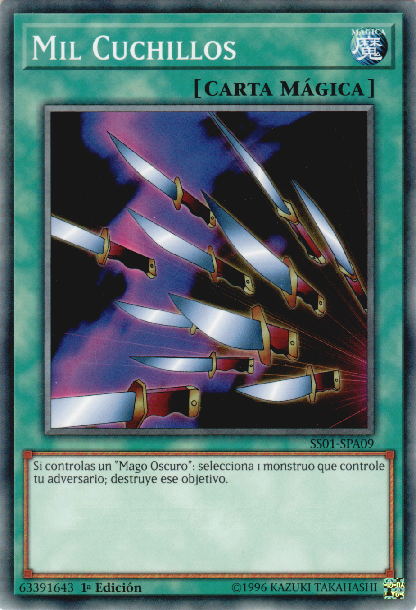
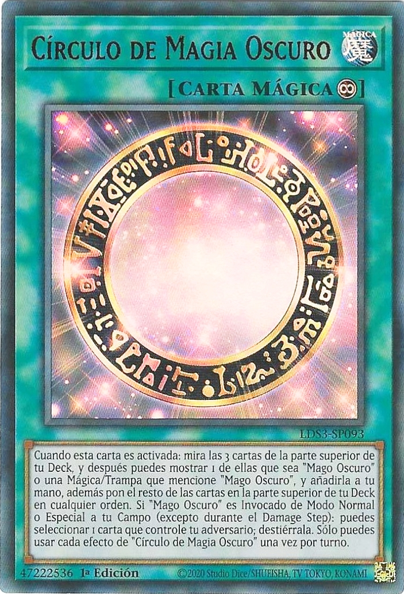
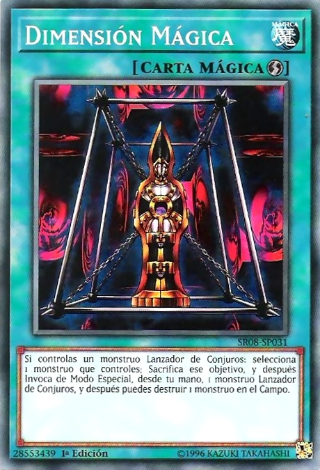

Magias
Las magias son cartas celestes que se pueden activar sin necesidad de ser colocada antes
Magias Normales: Son magias sin ninguna habilidad extra, no tienen ningun signo caracterisitico
Magias Continuas: Son magias que no van al cementerio al dejar el campo, se caracterisan por tener un signo de infinito
Magias de Juego Rapido: Son magias que se pueden jugar en el turno del rival igual que las trampas y tambien en tu turno, estas se caracterisan por tener un signo de rayo arriba a la derecha
